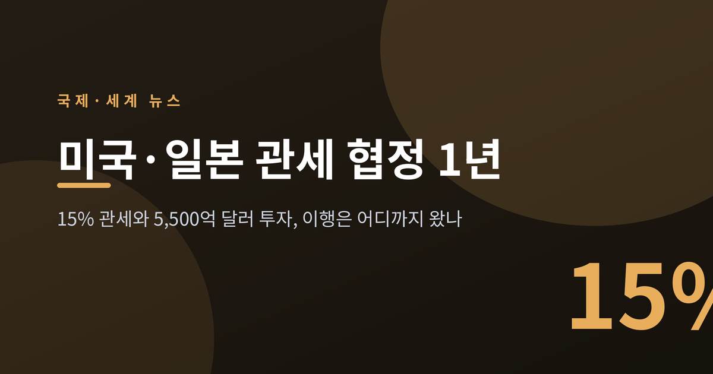
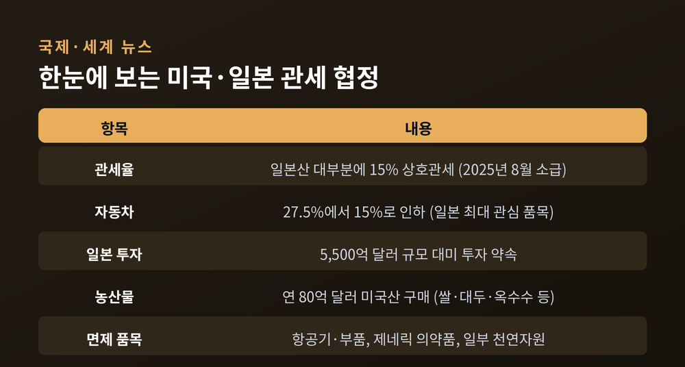
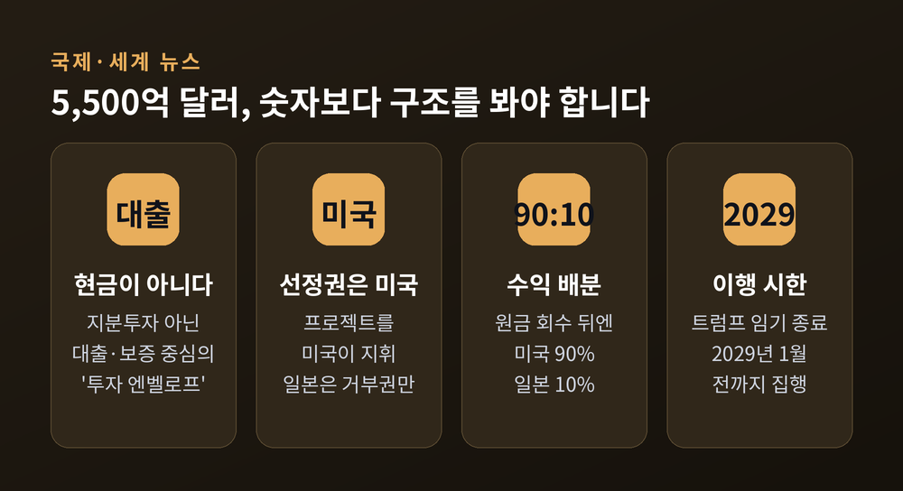
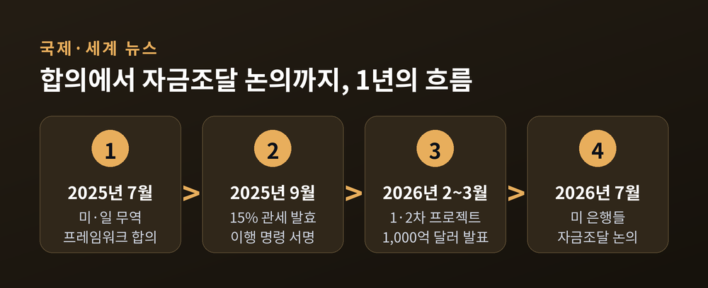
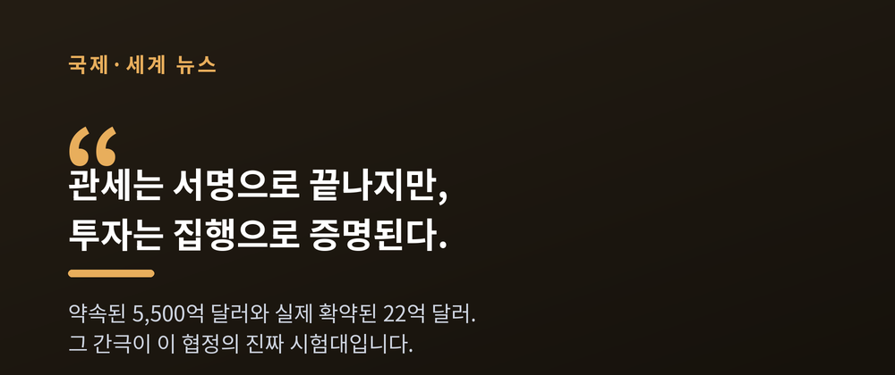
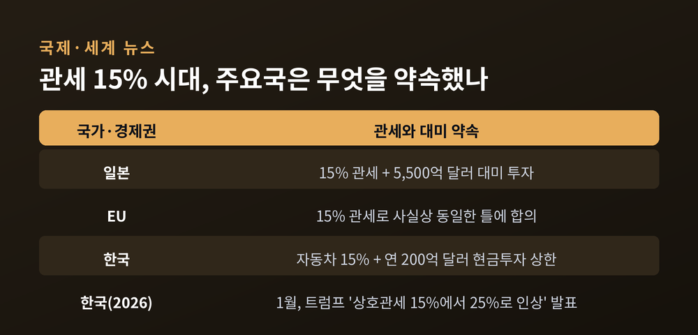

이번 글에서는 미국과 일본이 맺은 관세·투자 협정이 1년을 지나며 실제로 어떻게 굴러가고 있는지 정리해 보겠습니다. 일본산 제품에 15% 관세, 그 대가로 일본이 미국에 5,500억 달러를 투자한다는 합의였습니다. 무슨 일이 있었고, 왜 중요하며, 한국에는 어떤 뜻인지 차분히 짚어보겠습니다.

2025년 7월, 미국과 일본은 무역 프레임워크에 합의했습니다.
핵심은 두 줄로 요약됩니다.
미국은 일본산 대부분의 수입품에 15% 관세를 매깁니다.
일본은 그 대가로 미국에 5,500억 달러를 투자하기로 했습니다.
이 관세는 2025년 8월 7일로 소급 적용됐고, 9월 4일 트럼프 대통령이 이행 행정명령에 서명하며 확정됐습니다.
가장 민감했던 품목은 자동차였습니다.
예전엔 일본산 자동차에 27.5%의 관세가 붙었습니다.
지금은 15%로 내렸습니다.
일본 완성차 업계로서는 최악을 피한 셈입니다.
항공기와 부품, 제네릭 의약품, 미국 내에서 구하기 어려운 천연자원 등은 추가 관세에서 빠졌습니다.
여기에 일본은 연 80억 달러어치 미국산 농산물 구매까지 얹었습니다.

숫자만 보면 어마어마합니다.
5,500억 달러는 우리 돈으로 700조 원을 훌쩍 넘깁니다.
그런데 이 돈의 성격을 들여다보면 이야기가 조금 달라집니다.
이것은 일본이 미국에 통째로 건네는 현금이 아닙니다.
대출과 보증을 아우르는 '투자 엔벨로프', 즉 자금 조달의 틀에 가깝습니다.
일본국제협력은행과 일본무역보험 같은 정부계 기관이 뒤를 받칩니다.
구조도 미국에 유리하게 짜였습니다.
프로젝트를 고르고 지휘하는 쪽은 미국입니다.
일본은 거부권을 갖지만, 거부하면 미국이 관세를 다시 올릴 수 있습니다.
투자는 트럼프 대통령의 임기가 끝나는 2029년 1월 전까지 마쳐야 합니다.
수익 배분을 두고는 특히 말이 많았습니다.
투자로 생긴 돈은 일본이 원금과 이자를 회수할 때까지는 반씩 나눕니다.
그 뒤부터는 미국이 90%, 일본이 10%를 가져갑니다.
트럼프 대통령이 "이익의 90%는 미국 몫"이라고 말하자, 일본 정부는 "분배는 투자와 위험 수준을 반영한다"며 서둘러 진화에 나섰습니다.
합의의 세부 조건이 초기 양해각서 단계에서 문서로 온전히 굳지 않았다는 지적도 나왔습니다.

말과 서명은 끝났습니다. 문제는 실행입니다.
2026년 2월 17일, 첫 프로젝트가 공개됐습니다.
일본이 미국의 석유·가스·핵심광물 사업에 최대 360억 달러를 넣는 첫 묶음이었습니다.
오하이오의 대형 천연가스 발전소, 멕시코만의 원유 플랫폼, 테네시와 앨라배마의 소형모듈원자로가 이름을 올렸습니다.
3월 20일에는 두 번째 묶음이 발표됐습니다.
두 차례를 합치면 지금까지 나온 프로젝트는 1,000억 달러를 넘습니다.
전체 5,500억 달러의 5분의 1 남짓입니다.
여기까지만 보면 순항하는 듯합니다.
하지만 속을 들여다보면 사정이 다릅니다.
2월에 발표한 첫 프로젝트에 실제로 자금이 확약된 금액은 약 22억 달러에 그쳤습니다.
발표된 360억 달러의 극히 일부입니다.
이유는 돈의 통화에 있습니다.
일본 은행들의 자금 기반은 엔화입니다.
장기 대형 인프라에 필요한 막대한 달러를 조달하려면 비용이 너무 큽니다.
그래서 일본 은행들은 참여를 주저해 왔습니다.
그 빈자리를 미국 은행이 메우려 합니다.
2026년 7월 21일, JP모건을 비롯한 미국 대형 은행들이 일본의 5,500억 달러 투자에 자금을 대는 방안을 논의 중이라는 보도가 나왔습니다.
일본이 약속을 지키도록 미국 금융이 거드는 모양새입니다.
'약속한 돈'과 '실제 움직이는 돈' 사이의 거리.
그 간극이 이 협정의 진짜 시험대입니다.

이 협정은 일본만의 이야기가 아닙니다.
EU도 미국과 15% 관세로 사실상 같은 틀에 합의했습니다.
한국 역시 2025년 10월 자동차 관세를 25%에서 15%로 낮추는 합의에 이르렀습니다.
주요 경제권이 잇달아 '15% 기준선'으로 모여든 셈입니다.
미국의 방식은 일정한 무늬를 그립니다.
높은 관세를 지렛대로 내걸고, 상대국의 대규모 대미 투자와 구매 약속을 받아냅니다.
관세를 낮춰 주는 대신, 돈과 공장을 미국으로 끌어옵니다.
평가는 갈립니다.
미국이 이겼다는 시각이 있습니다.
반대로 상대국이 관세 불확실성을 걷어내고 최악을 피했다는 시각도 있습니다.
미국은 관세 수입과 전략산업 투자를 동시에 챙겼습니다.
일본은 자동차 관세를 낮추고 예측 가능성을 얻었습니다.
어느 한쪽만 웃었다고 잘라 말하긴 어렵습니다.
다만 관세를 무기로 투자를 끌어내는 방식이 통상질서를 흔든다는 우려도 분명합니다.
'강요된 투자'라는 비판이 그것입니다.
세계무역기구 체제가 지향하던 다자·호혜의 원칙과는 결이 다릅니다.
힘 있는 나라가 시장 접근을 조건으로 상대의 지갑을 여는 양자 거래.
이 방식이 표준이 되면, 협상력이 약한 나라일수록 더 큰 청구서를 받게 됩니다.

한국의 상황은 아직 매듭이 덜 지어졌습니다.
2025년 10월, 한국은 미국과 관세 협상을 타결했습니다.
자동차 관세는 일본·EU와 같은 15%로 내렸습니다.
연 200억 달러 상한의 현금투자에 합의했고, 반도체는 경쟁국 대만에 밀리지 않는 수준으로 정리했습니다.
쌀과 쇠고기의 추가 개방은 막아냈습니다.
여기까지는 다행입니다.
그런데 2026년 1월 26일, 트럼프 대통령이 한국에 매기는 상호관세를 15%에서 25%로 올리겠다고 밝혔습니다.
걷힌 줄 알았던 안개가 다시 낀 셈입니다.
2월에는 미국 연방대법원이 상호관세를 위법이라 판결했습니다.
하지만 자동차와 반도체는 별도의 품목관세로 묶여 있고, 10%의 글로벌 추가관세도 남았습니다.
결국 한국 수출의 관세 벽은 실질적으로 낮아지지 않았다는 분석이 나옵니다.
일본에서 시작된 '관세는 내리고 투자는 약속하는' 모델은 이제 한국에도 상수가 되고 있습니다.
우리 기업의 대미 투자 부담과 통상 리스크가 일상이 되어 간다는 뜻입니다.
주목할 대목은 일본의 자금조달 난항입니다.
약속은 쉬워도 집행은 어렵다는 사실을 일본이 먼저 보여주고 있습니다.
연 200억 달러라는 한국의 현금투자 상한도, 실제로 채우려면 같은 고민에 부딪히기 마련입니다.
남의 일로만 볼 수 없는 이유입니다.

정리하면 이렇습니다.
미국·일본 협정은 큰 숫자로 시작했지만, 지금은 그 숫자를 실제로 채우는 지루한 실행의 국면에 들어섰습니다.
약속된 5,500억 달러와 움직인 22억 달러 사이, 그 거리를 어떻게 좁히느냐가 관건입니다.
"관세는 서명으로 끝나지만, 투자는 집행으로 증명된다."
미국과 일본이 그 증명에 성공할지, 그리고 같은 길을 걷는 한국이 무엇을 준비해야 할지.
앞으로의 1년이 지난 1년보다 더 중요할지도 모르겠습니다.
</content>